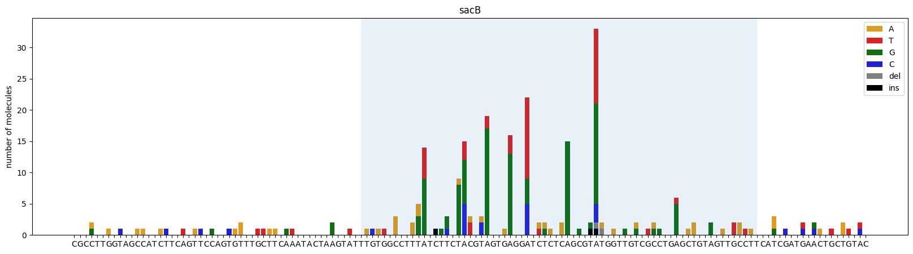

Usage: dgrec genotypes [OPTIONS] FASTQ REF
Options:
-u, --umi_size INTEGER Number of nucleotides at the begining of the
read that will be used as the UMI
-q, --quality_threshold INTEGER
threshold value used to filter out reads of
poor average quality
-i, --ignore_pos LIST list of positions that are ignored in the
genotype, e.g. [0,1,149,150]
-r, --reads_per_umi_thr INTEGER
minimum number of reads required to take a
UMI into account. Using a number >2 enables
to perform error correction for UMIs with
multiple reads
-s, --save_umi_data TEXT path to a csv file to save the details of
the genotypes reads for each UMI. If None
the data isn't saved.
-o, --output TEXT output file path
--help Show this message and exit.dgrec
Analysing DGRec data
Read the doc: https://dbikard.github.io/dgrec/
Install
pip install git+https://github.com/dbikard/dgrec.gitHow to use
Command line interface
Single reads
dgrec genotypes fastq_path reference_path -o genotypes.csvPaired reads
dgrec genotypes_paired fwd_fastq_path rev_fastq_path reference_path --fwd_span 0 150 --rev_span 30 150 -o genotypes.csvUsage: dgrec genotypes_paired [OPTIONS] FASTQ_FWD FASTQ_REV REF
Calls dgrec.genotypes_paired.get_genotypes_paired
Options:
--fwd_span <INTEGER INTEGER>...
Span of the reference sequence read in the
forward orientation format: start end
[required]
--rev_span <INTEGER INTEGER>...
Span of the reference sequence read in the
reverse orientation format: start end
[required]
-p, --require_perfect_pair_agreement
Require perfect pair agreement for genotype
calling (default: True). If
set to False, the forward sequence will be
used in case of disagreement.
-u1, --umi_size_fwd INTEGER Number of nucleotides at the beginning of
the fwd read that will be used as the UMI
(default: 10)
-u2, --umi_size_rev INTEGER Number of nucleotides at the beginning of
the rev read that will be used as the UMI
(default: 0)
-q, --quality_threshold INTEGER
Threshold value used to filter out reads of
poor average quality (default: 30)
-i, --ignore_pos LIST List of positions that are ignored in the
genotype (default: [])
-r, --reads_per_umi_thr INTEGER
Minimum number of reads required to take a
UMI into account (default: 0).
Using a number >2 enables to perform error
correction for UMIs with multiple reads
-s, --save_umi_data TEXT Path to a csv file to save the details of
the genotypes reads for each UMI. If None
the data isn't saved (default: None)
-n INTEGER Number of reads to use. If None all the
reads are used (default: None)
-o, --output TEXT Output file path
--help Show this message and exit.In python
import dgrecfrom Bio import SeqIO
import os
#Getting the path to the fastq file
fastq_file="sacB_example.fastq.gz"
fastq_path=os.path.join(data_path,fastq_file)
#Getting the reference sequence for the amplicon
read_ref_file="sacB_ref.fasta"
ref=next(SeqIO.parse(os.path.join(data_path,read_ref_file),"fasta"))
ref_seq=str(ref.seq)
#Generating a list of genotypes sorted by the number of UMIs that are read for each genotype
gen_list = dgrec.get_genotypes(fastq_path, ref_seq, ignore_pos=[0,1,2,138,139,140,141])
#Printing the top results
for g in gen_list[:20]:
print(f"{g[1]}\t{g[0]}")n reads: 1000
n_reads pass filter: 847
n_reads aligned: 824
Number of UMIs: 814
Median number of reads per UMI: 1.0
Number of genotypes: 123
675
3 C56A
3 A76G
3 A91G
3 A91T
2 C69T
2 T122A
2 A91C
2 A105G
2 C116A
2 T60A
2 T59A
2 A68G
2 T134A
1 A61G,-63T,A76T,A91T
1 A79T,A91G
1 A61G,A72G,A76G,A79T
1 T108A,G127T,G132T
1 A48T,A86G
1 A61T,A68T,A72G,A79C,A91Gfig = dgrec.plot_mutations(gen_list, ref_seq, sample_name="sacB", TR_range=[50,119])